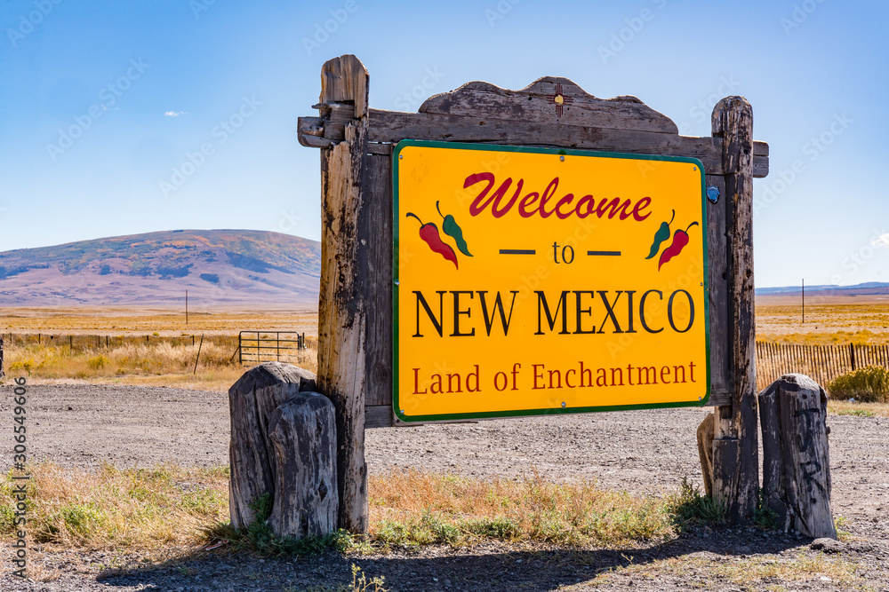

New Mexico
Home
Santa-fe
Albuquerque
Roswell
Alamogordo
Contact Us
The Land of Enchantment

Welcome to New Mexico and one of the most hidden jems of the United States. Below is a list of the 10 most highly recomended spots to visit while planning a trip. Hopefully after visiting this website you will consider visiting the state!
White Sands National Park
Carlsbad Caverns National Park
Bandelier National Monument
Chaco Culture National Historical Park
Kasha-Katuwe Tent Rocks National Monument
Gila Cliff Dwellings National Monument
Petroglyph National Monument
Taos
Shiprock
Catwalk Recreation Area
Honorable mention cities that have a lot to offer but didnt make the list!
City
County
population
Farmington
San Juan
46,624
Gallup
Mckinley
71,780
Silver City
Grant
27,889